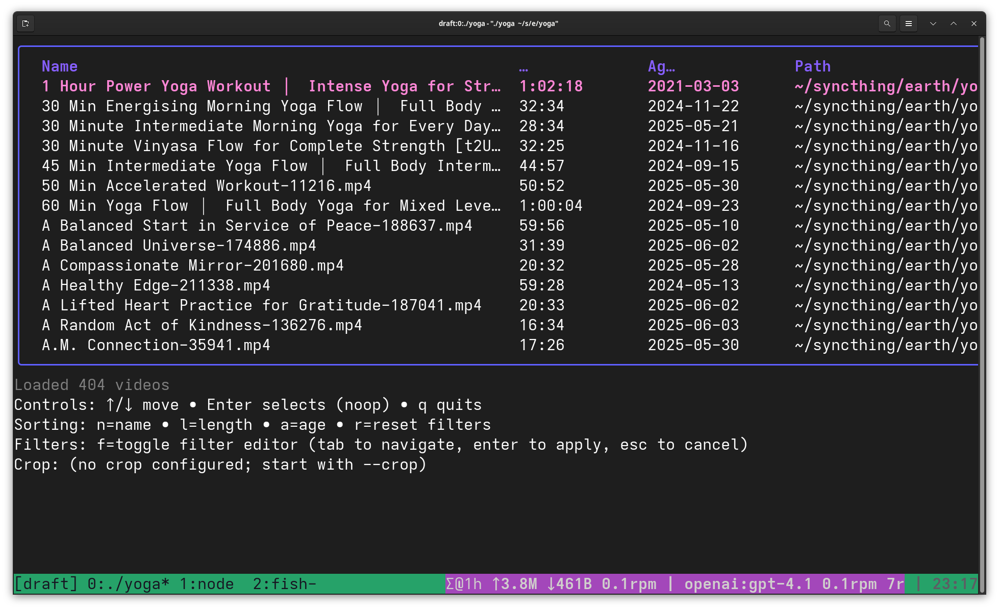
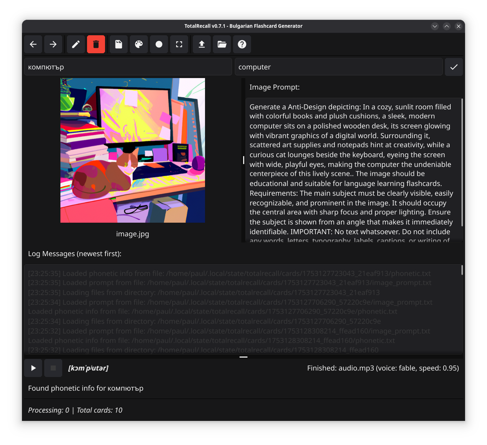
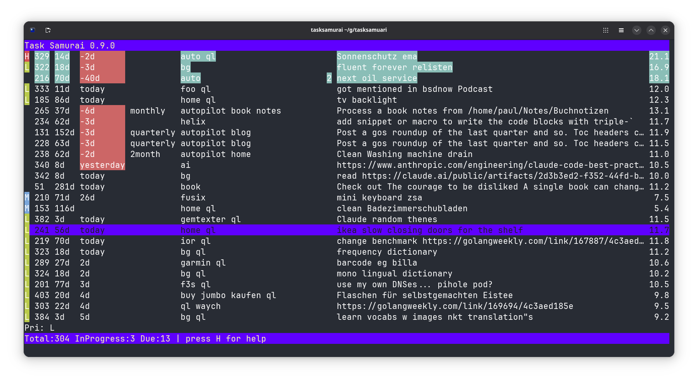
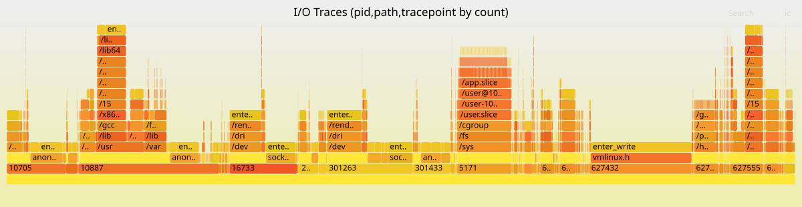
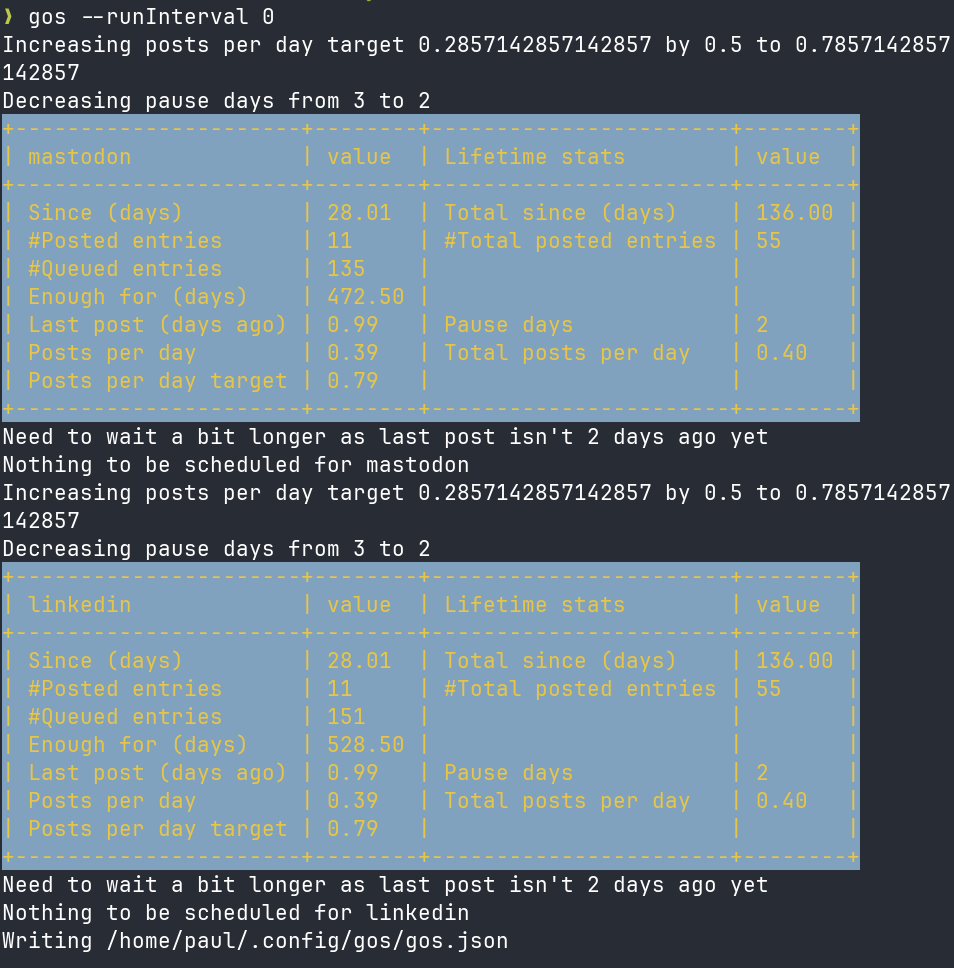
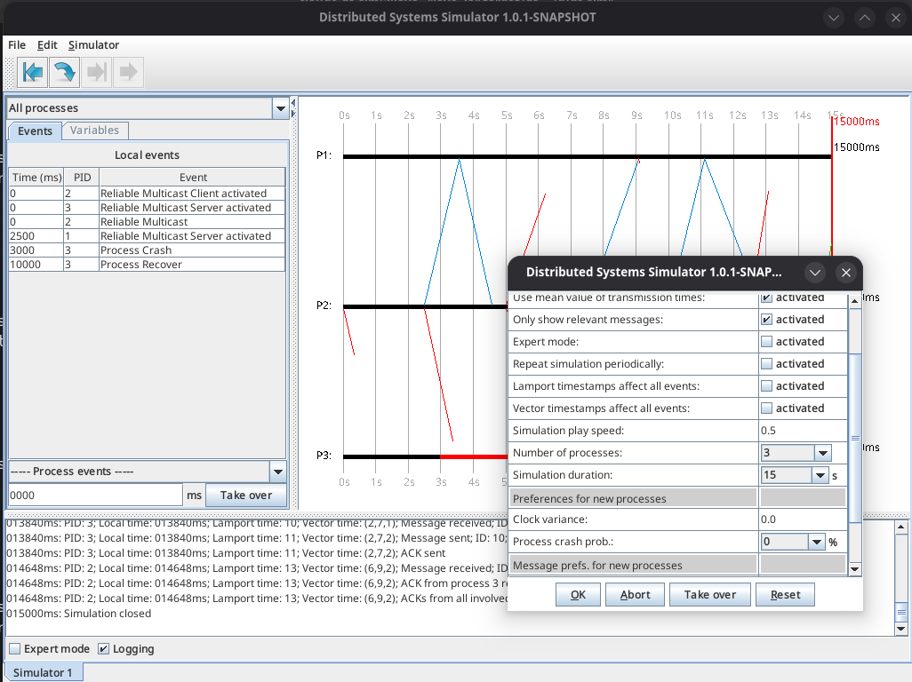
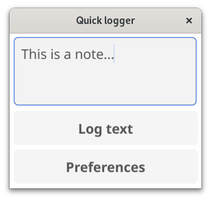
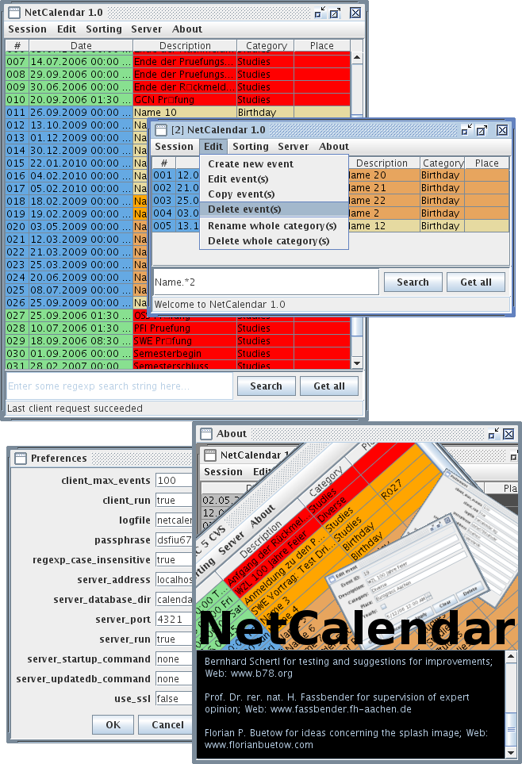
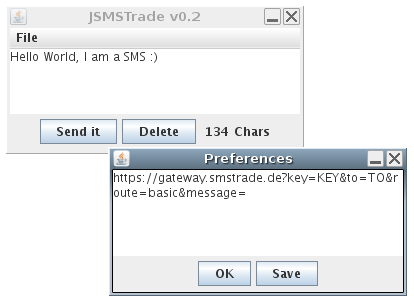

Project Showcase
Generated on: 2026-02-07
This page showcases my side projects, providing an overview of what each project does, its technical implementation, and key metrics. Each project summary includes information about the programming languages used, development activity, and licensing. The projects are ranked by score, which combines project size and recent activity.
Table of Contents
Overall Statistics
- 📦 Total Projects: 60
- 📊 Total Commits: 13,066
- 📈 Total Lines of Code: 320,071
- 📄 Total Lines of Documentation: 31,896
- 💻 Languages: Go (29.6%), Java (12.8%), C++ (7.9%), C (6.0%), XML (6.0%), Shell (5.8%), CSS (5.6%), Perl (5.4%), C/C++ (5.1%), YAML (4.7%), HTML (3.3%), Python (2.2%), Config (1.3%), JSON (1.1%), Ruby (0.9%), HCL (0.9%), Make (0.6%), Raku (0.3%), Haskell (0.2%), JavaScript (0.2%)
- 📚 Documentation: Markdown (62.5%), Text (35.7%), LaTeX (1.8%)
- 🚀 Release Status: 38 released, 22 experimental (63.3% with releases, 36.7% experimental)
Projects
1. epimetheus
- 💻 Languages: Go (83.4%), Shell (16.6%)
- 📚 Documentation: Markdown (100.0%)
- 📊 Commits: 1
- 📈 Lines of Code: 4844
- 📄 Lines of Documentation: 1064
- 📅 Development Period: 2026-02-07 to 2026-02-07
- 🏆 Score: 3019.2 (combines code size and activity)
- ⚖️ License: No license found
- 🧪 Status: Experimental (no releases yet)
**Epimetheus** is a Go tool for pushing metrics to Prometheus that uniquely supports both realtime and historic data ingestion. Named after Prometheus's brother (meaning "afterthought"), it solves the common problem of getting metrics into Prometheus *after* they were collected—whether from hours, days, or weeks ago. It offers four operating modes: realtime (via Pushgateway), historic (single past datapoint via Remote Write API), backfill (range of historic data), and auto (intelligent routing based on timestamp age).
The architecture routes current data (<5 min old) through Pushgateway where Prometheus scrapes it, while historic data goes directly to Prometheus via the Remote Write API to preserve original timestamps. It supports CSV and JSON input formats, generates realistic test metrics (counters, gauges, histograms), and includes a Grafana dashboard. The tool is built with a clean internal structure separating config, metrics generation, parsing, and ingestion concerns—making it useful for backfilling gaps, data migration, testing monitoring setups, and ad-hoc troubleshooting scenarios.
View on Codeberg
View on GitHub
---
2. conf
- 💻 Languages: YAML (68.9%), Shell (13.1%), Perl (9.0%), Python (2.0%), Config (1.6%), CSS (1.5%), TOML (1.4%), Ruby (1.2%), Docker (0.6%), Lua (0.3%), JSON (0.2%), HTML (0.1%)
- 📚 Documentation: Markdown (97.1%), Text (2.9%)
- 📊 Commits: 2305
- 📈 Lines of Code: 21210
- 📄 Lines of Documentation: 6495
- 📅 Development Period: 2021-12-28 to 2026-02-06
- 🏆 Score: 698.1 (combines code size and activity)
- ⚖️ License: No license found
- 🧪 Status: Experimental (no releases yet)
This is a personal configuration management repository that centralizes infrastructure and application configurations across multiple environments. It serves as a single source of truth for system administration tasks, dotfiles, Docker deployments, and Kubernetes/Helm manifests, making it easier to maintain consistency across machines and deploy self-hosted services.
The project is organized into distinct subdirectories: dotfiles/ contains shell configurations (bash, fish), editor settings (helix, nvim), and window manager configs (sway, waybar); f3s/ houses Kubernetes/Helm manifests for various self-hosted applications like Miniflux, FreshRSS, and Syncthing; babylon5/ includes Docker startup scripts for services like Nextcloud, Vaultwarden, and Audiobookshelf; and frontends/ and playground/ for additional configurations. The repository uses Rex (a Perl-based deployment tool) as its automation framework, with a top-level Rexfile that includes subdirectory Rexfiles for modular task execution.
View on Codeberg
View on GitHub
---
3. foo.zone
- 💻 Languages: XML (98.7%), Shell (1.0%), Go (0.3%)
- 📚 Documentation: Text (86.2%), Markdown (13.8%)
- 📊 Commits: 3505
- 📈 Lines of Code: 18702
- 📄 Lines of Documentation: 174
- 📅 Development Period: 2021-04-29 to 2026-02-07
- 🏆 Score: 689.4 (combines code size and activity)
- ⚖️ License: No license found
- 🧪 Status: Experimental (no releases yet)
foo.zone: source code repository.
View on Codeberg
View on GitHub
---
4. scifi
- 💻 Languages: JSON (35.9%), CSS (30.6%), JavaScript (29.6%), HTML (3.8%)
- 📚 Documentation: Markdown (100.0%)
- 📊 Commits: 23
- 📈 Lines of Code: 1664
- 📄 Lines of Documentation: 853
- 📅 Development Period: 2026-01-25 to 2026-01-27
- 🏆 Score: 232.2 (combines code size and activity)
- ⚖️ License: No license found
- 🧪 Status: Experimental (no releases yet)
This is a static HTML showcase for a personal sci-fi book collection (54 books). It displays books in a responsive grid with cover images, lets users filter by author, format, or free-text search, and shows plot summaries in a modal on click. The entire site works offline with no external dependencies — all covers, metadata, and summaries are bundled locally.
The architecture keeps content separate from presentation: book metadata lives in data/books.json, summaries are individual markdown files in summaries/, and covers are stored as local JPGs. A build step (node build.js) embeds the markdown summaries into the JSON file, producing a self-contained site that can be served as plain static files. The frontend (js/app.js) handles filtering and modal display client-side, while css/styles.css provides the grid layout and styling.
View on Codeberg
View on GitHub
---
5. log4jbench
- 💻 Languages: Java (78.9%), XML (21.1%)
- 📚 Documentation: Markdown (100.0%)
- 📊 Commits: 4
- 📈 Lines of Code: 774
- 📄 Lines of Documentation: 119
- 📅 Development Period: 2026-01-09 to 2026-01-09
- 🏆 Score: 96.5 (combines code size and activity)
- ⚖️ License: MIT
- 🧪 Status: Experimental (no releases yet)
This is a Java-based benchmarking tool for measuring Log4j2 logging throughput under different configurations. It allows developers to compare synchronous vs. asynchronous logging strategies by testing five built-in configurations: immediate-flush sync, buffered sync, and async loggers with varying LMAX Disruptor ring buffer sizes (1K/4K/10K). The tool supports configurable thread counts, duration or event-count based testing, custom message sizes, and CSV export for analysis.
The implementation uses a fat JAR built with Maven, requiring Java 17+. It's designed for realistic benchmarking—including warmup periods and optional Linux filesystem cache dropping between tests. This helps developers make informed decisions about Log4j2 configuration tradeoffs between latency (immediate flush), throughput (buffered/async), and memory usage (ring buffer sizing) for their specific workloads.
View on Codeberg
View on GitHub
---
6. hexai
- 💻 Languages: Go (100.0%)
- 📚 Documentation: Markdown (100.0%)
- 📊 Commits: 259
- 📈 Lines of Code: 18422
- 📄 Lines of Documentation: 616
- 📅 Development Period: 2025-08-01 to 2026-02-06
- 🏆 Score: 57.5 (combines code size and activity)
- ⚖️ License: No license found
- 🏷️ Latest Release: v0.17.0 (2026-02-06)

Hexai is a Go-based AI integration tool designed primarily for the Helix editor that provides LSP (Language Server Protocol) powered AI features. It offers code auto-completion, AI-driven code actions, in-editor chat with LLMs, and a standalone CLI tool for direct LLM interaction. A standout feature is its ability to query multiple AI providers (OpenAI, OpenRouter, GitHub Copilot, Ollama) in parallel, allowing developers to compare responses side-by-side. It has enhanced capabilities for Go code understanding, such as generating unit tests from functions, while supporting other programming languages as well.
The project is implemented as an LSP server written in Go, with a TUI component built using Bubble Tea for the tmux-based code action runner (hexai-tmux-action). This architecture allows it to integrate seamlessly into LSP-compatible editors, with special focus on Helix + tmux workflows. The custom prompt feature lets developers use their preferred editor to craft prompts, making it flexible for various development workflows.
View on Codeberg
View on GitHub
---
7. perc
- 💻 Languages: Go (100.0%)
- 📚 Documentation: Markdown (100.0%)
- 📊 Commits: 7
- 📈 Lines of Code: 452
- 📄 Lines of Documentation: 80
- 📅 Development Period: 2025-11-25 to 2025-11-25
- 🏆 Score: 35.4 (combines code size and activity)
- ⚖️ License: No license found
- 🏷️ Latest Release: v0.1.0 (2025-11-25)
**perc** is a command-line percentage calculator written in Go that handles the three common percentage calculation scenarios: finding X% of Y (e.g., "20% of 150"), determining what percentage one number is of another (e.g., "30 is what % of 150"), and finding the whole when given a part and percentage (e.g., "30 is 20% of what"). It accepts natural language-style input and shows step-by-step calculation breakdowns alongside results.
The tool is built as a simple Go CLI application with a standard project layout (cmd/perc for the binary, internal/ for implementation details) and uses Mage as its build system. It's installable via go install and designed for quick mental-math verification or scripting scenarios where percentage calculations are needed.
View on Codeberg
View on GitHub
---
8. yoga
- 💻 Languages: Go (66.1%), HTML (33.9%)
- 📚 Documentation: Markdown (100.0%)
- 📊 Commits: 24
- 📈 Lines of Code: 5921
- 📄 Lines of Documentation: 83
- 📅 Development Period: 2025-10-01 to 2026-01-28
- 🏆 Score: 34.9 (combines code size and activity)
- ⚖️ License: No license found
- 🏷️ Latest Release: v0.4.0 (2026-01-28)

Yoga is a Terminal User Interface (TUI) application written in Go that helps users browse and play local yoga video collections. It scans a designated directory for video files (MP4, MKV, MOV, AVI, WMV, M4V), extracts and caches duration metadata, and presents them in an interactive table. Users can quickly filter videos by name, duration range, or tags, sort by various criteria (name, length, age), and launch playback in VLC with a single keypress. The tool is particularly useful for managing personal yoga practice libraries where you want to quickly find videos matching specific time constraints or styles without opening a file browser.
The implementation follows clean Go architecture with domain logic organized under internal/ (including app for TUI flow, fsutil for filesystem operations, and meta for metadata caching). It uses a keyboard-driven interface with vim-like navigation and maintains a .video_duration_cache.json file per directory to avoid re-probing video durations on subsequent scans. The project emphasizes maintainability with ≥85% test coverage requirements, table-driven tests, and strict formatting via gofumpt, while keeping the entry point minimal in cmd/yoga/main.go.
View on Codeberg
View on GitHub
---
9. totalrecall
- 💻 Languages: Go (99.0%), Shell (0.5%), YAML (0.4%)
- 📚 Documentation: Markdown (99.5%), Text (0.5%)
- 📊 Commits: 101
- 📈 Lines of Code: 13129
- 📄 Lines of Documentation: 377
- 📅 Development Period: 2025-07-14 to 2026-01-21
- 🏆 Score: 28.6 (combines code size and activity)
- ⚖️ License: MIT
- 🏷️ Latest Release: v0.8.0 (2026-01-21)
TotalRecall is a Go-based tool that generates comprehensive Anki flashcard materials for Bulgarian language learning. It creates high-quality audio pronunciations using OpenAI TTS (with 11 voice options), AI-generated contextual images via DALL-E, IPA phonetic transcriptions, and automatic Bulgarian-English translations. The tool supports both single-word and batch processing, making it efficient for building large vocabulary decks. It outputs Anki-compatible packages (APKG) with all media files bundled, ready for immediate import.

The project offers both a keyboard-driven GUI for interactive use and a CLI for automation, built with Go using the Cobra framework for command handling. It leverages OpenAI's APIs for both audio synthesis and image generation, creating memorable visual contexts with random art styles to enhance retention. The architecture follows clean Go package structure with separate internal packages for audio, image, config, and Anki format generation, making it maintainable and extensible for future enhancements.
View on Codeberg
View on GitHub
---
10. gogios
- 💻 Languages: Go (98.7%), JSON (0.8%), YAML (0.5%)
- 📚 Documentation: Markdown (94.9%), Text (5.1%)
- 📊 Commits: 104
- 📈 Lines of Code: 3303
- 📄 Lines of Documentation: 394
- 📅 Development Period: 2023-04-17 to 2026-01-27
- 🏆 Score: 24.0 (combines code size and activity)
- ⚖️ License: Custom License
- 🏷️ Latest Release: v1.3.0 (2026-01-06)
Gogios is a minimalistic monitoring tool written in Go for small-scale infrastructure (e.g., personal servers and VMs). It executes standard Nagios/Icinga monitoring plugins via CRON jobs, tracks state changes in a JSON file, and sends email notifications through a local MTA only when check statuses change. Unlike full-featured monitoring solutions (Nagios, Icinga, Prometheus), Gogios deliberately avoids complexity—no databases, web UIs, clustering, or contact groups—making it ideal for simple, self-hosted environments with limited monitoring needs.
The architecture is straightforward: JSON configuration defines checks (plugin paths, arguments, timeouts, dependencies, retries), a state directory persists check results between runs, and concurrent execution with configurable limits keeps things efficient. Key features include check dependencies (skip HTTP checks if ping fails), retry logic, stale alert detection, re-notification schedules, and support for remote checks via NRPE. A basic high-availability setup is achievable by running Gogios on two servers with staggered CRON intervals, though this results in duplicate notifications when both servers are operational—a deliberate trade-off for simplicity.
View on Codeberg
View on GitHub
---
11. gitsyncer
- 💻 Languages: Go (92.2%), Shell (7.4%), JSON (0.4%)
- 📚 Documentation: Markdown (100.0%)
- 📊 Commits: 116
- 📈 Lines of Code: 10075
- 📄 Lines of Documentation: 2432
- 📅 Development Period: 2025-06-23 to 2025-12-31
- 🏆 Score: 21.6 (combines code size and activity)
- ⚖️ License: BSD-2-Clause
- 🏷️ Latest Release: v0.11.0 (2025-12-31)
GitSyncer is a Go-based CLI tool that automatically synchronizes git repositories across multiple hosting platforms (GitHub, Codeberg, SSH servers). It maintains all branches in sync bidirectionally, never deleting branches but automatically creating and updating them as needed. The tool excels at providing repository redundancy and backup, with special support for one-way SSH backups to private servers (like home NAS devices) that may be offline intermittently. It includes AI-powered features for generating release notes and project showcase documentation, plus automated weekly batch synchronization for hands-off maintenance.
The implementation uses a git remotes approach: it clones from one organization, adds others as remotes, then fetches, merges, and pushes changes across all configured locations. Built with a modern command-based structure (using Cobra), it offers fine-grained control through subcommands for syncing (individual repos, all repos, platform-specific, bidirectional), release management, testing, and repository management. Key architectural features include merge conflict detection, regex-based branch exclusion, automatic repository creation on both web platforms and SSH servers, configurable backup locations with opt-in syncing, and integration with multiple AI tools (hexai, claude, aichat) for intelligent release note generation.
View on Codeberg
View on GitHub
---
12. foostats
- 💻 Languages: Perl (100.0%)
- 📚 Documentation: Markdown (54.6%), Text (45.4%)
- 📊 Commits: 98
- 📈 Lines of Code: 1902
- 📄 Lines of Documentation: 423
- 📅 Development Period: 2023-01-02 to 2025-11-01
- 🏆 Score: 19.2 (combines code size and activity)
- ⚖️ License: Custom License
- 🏷️ Latest Release: v0.2.0 (2025-10-21)
**foostats** is a privacy-respecting web analytics tool designed for OpenBSD that processes both traditional HTTP/HTTPS server logs and Gemini protocol logs to generate anonymous site statistics. It immediately hashes all IP addresses using SHA3-512 before storage, ensuring no personal information is retained while still providing meaningful traffic insights. The tool supports distributed deployments with node-to-node replication, filters out suspicious requests based on configurable patterns, and generates comprehensive daily and monthly reports in both Gemtext and HTML formats. It's particularly useful for privacy-conscious site operators who need traffic analytics without compromising visitor anonymity.
The implementation uses a modular Perl architecture with specialized components: **Logreader** parses logs from httpd and Gemini servers (vger/relayd), **Filter** blocks suspicious patterns, **Aggregator** compiles statistics, **Replicator** synchronizes data between partner nodes, and **Reporter** generates human-readable reports. Statistics are stored as compressed JSON files, supporting both IPv4 and IPv6, with built-in feed analytics for tracking Atom/RSS and Gemfeed subscribers. The tool is designed specifically for the foo.zone ecosystem but can be adapted for any OpenBSD-based hosting environment requiring privacy-first analytics.
View on Codeberg
View on GitHub
---
13. tasksamurai
- 💻 Languages: Go (99.8%), YAML (0.2%)
- 📚 Documentation: Markdown (100.0%)
- 📊 Commits: 222
- 📈 Lines of Code: 6544
- 📄 Lines of Documentation: 254
- 📅 Development Period: 2025-06-19 to 2026-02-04
- 🏆 Score: 19.1 (combines code size and activity)
- ⚖️ License: BSD-2-Clause
- 🏷️ Latest Release: v0.11.0 (2026-02-04)

**Task Samurai** is a fast, keyboard-driven terminal UI for Taskwarrior built in Go using the Bubble Tea framework. It displays your Taskwarrior tasks in an interactive table where you can manage them entirely through hotkeys—adding, starting, completing, and annotating tasks without touching the mouse. It supports all Taskwarrior filters as command-line arguments, allowing you to start with focused views like tasksamurai +tag status:pending or tasksamurai project:work due:today.
Under the hood, Task Samurai acts as a front-end wrapper that invokes the native task command to read and modify tasks, ensuring compatibility with your existing Taskwarrior setup. The UI automatically refreshes after each action to keep the table current. It was created as an experiment in agentic coding and as a faster alternative to Python-based tools like vit, leveraging Go's performance and the Bubble Tea framework's efficient terminal rendering. The project even includes a "disco mode" flag that cycles through themes for a more playful experience.
View on Codeberg
View on GitHub
---
14. timr
- 💻 Languages: Go (96.0%), Shell (4.0%)
- 📚 Documentation: Markdown (100.0%)
- 📊 Commits: 32
- 📈 Lines of Code: 1538
- 📄 Lines of Documentation: 99
- 📅 Development Period: 2025-06-25 to 2026-01-02
- 🏆 Score: 17.3 (combines code size and activity)
- ⚖️ License: MIT
- 🏷️ Latest Release: v0.3.0 (2026-01-02)
timr is a minimalist command-line stopwatch timer written in Go that helps developers track time spent on tasks. It provides a persistent timer that saves state to disk, allowing you to start, stop, pause, and resume time tracking across terminal sessions. The tool supports multiple viewing modes including a standard status display (with formatted or raw output in seconds/minutes), a live full-screen view with keyboard controls, and specialized output for shell prompt integration.
The architecture is straightforward: it's a Go-based CLI application that persists timer state to the filesystem, enabling continuous tracking even when the program isn't actively running. Key features include basic timer controls (start/stop/continue/reset), flexible status reporting formats for automation, and fish shell integration that displays a color-coded timer icon and elapsed time directly in your prompt—making it effortless to keep track of how long you've been working without context switching.
View on Codeberg
View on GitHub
---
15. ior
- 💻 Languages: Go (50.4%), C (43.1%), Raku (4.5%), Make (1.1%), C/C++ (1.0%)
- 📚 Documentation: Text (69.7%), Markdown (30.3%)
- 📊 Commits: 337
- 📈 Lines of Code: 13072
- 📄 Lines of Documentation: 680
- 📅 Development Period: 2024-01-18 to 2025-10-09
- 🏆 Score: 17.2 (combines code size and activity)
- ⚖️ License: No license found
- 🧪 Status: Experimental (no releases yet)

I/O Riot NG is a Linux-only performance analysis tool that uses BPF (Berkeley Packet Filter) to trace synchronous I/O syscalls and measure their execution time. It captures stack traces during I/O operations and generates compressed output in a format compatible with Inferno FlameGraphs, allowing developers to visually identify performance bottlenecks caused by blocking I/O calls. This makes it particularly useful for diagnosing latency issues in applications where I/O operations are suspected of causing performance degradation.

The tool is implemented in Go and C, leveraging libbpfgo for BPF interaction. It automatically generates BPF tracepoint handlers and Go type definitions from Linux kernel tracepoint data, attaches to syscall entry/exit points, and collects timing data with minimal overhead. The project is a modern successor to the original I/O Riot (which used SystemTap), offering better performance and easier deployment through BPF's built-in kernel support.
View on Codeberg
View on GitHub
---
16. dtail
- 💻 Languages: Go (93.9%), JSON (2.8%), C (2.0%), Make (0.5%), C/C++ (0.3%), Config (0.2%), Shell (0.2%), Docker (0.1%)
- 📚 Documentation: Text (79.4%), Markdown (20.6%)
- 📊 Commits: 1054
- 📈 Lines of Code: 20091
- 📄 Lines of Documentation: 5674
- 📅 Development Period: 2020-01-09 to 2025-06-20
- 🏆 Score: 16.1 (combines code size and activity)
- ⚖️ License: Apache-2.0
- 🏷️ Latest Release: v4.3.3 (2024-08-23)
DTail is a distributed DevOps tool written in Go that enables engineers to tail, cat, and grep log files across thousands of servers simultaneously. It supports compressed logs (gzip and zstd) and includes advanced features like distributed MapReduce aggregations for log analysis at scale. The tool uses SSH for secure, encrypted communication and respects standard UNIX filesystem permissions and ACLs.
The architecture follows a client-server model where DTail servers run on target machines and a single DTail client (typically from a developer's laptop) connects to them concurrently, scaling to thousands of servers per session. It can also operate in a serverless mode. This design makes it particularly useful for troubleshooting and monitoring distributed systems, where engineers need to correlate logs across multiple machines in real-time without manually SSH-ing into each server individually.
View on Codeberg
View on GitHub
---
17. gos
- 💻 Languages: Go (99.8%), JSON (0.2%)
- 📚 Documentation: Markdown (100.0%)
- 📊 Commits: 399
- 📈 Lines of Code: 4102
- 📄 Lines of Documentation: 357
- 📅 Development Period: 2024-05-04 to 2025-12-27
- 🏆 Score: 15.4 (combines code size and activity)
- ⚖️ License: Custom License
- 🏷️ Latest Release: v1.2.3 (2026-01-31)

Gos is a command-line social media scheduling tool written in Go that serves as a self-hosted replacement for Buffer.com. It enables users to schedule and post messages to Mastodon and LinkedIn (plus a "Noop" pseudo-platform for tracking) through a simple file-based queueing system. Messages are created as text files in a designated directory (~/.gosdir), with optional tags embedded in filenames or content to control platform targeting, priority, and scheduling behavior. The tool addresses limitations of commercial services by offering unlimited posts, a scriptable CLI interface, and full user control without unwanted features like AI assistants.

The implementation uses OAuth2 for LinkedIn authentication, stores configuration as JSON, and manages posts through a platform-specific database structure. Gos employs intelligent scheduling based on configurable weekly targets, lookback windows, pause periods between posts, and run intervals to prevent over-posting. It supports priority queuing, platform exclusion rules, dry-run testing, and can generate Gemini gemtext summaries of posted content. Built with Mage for automation, the tool integrates seamlessly into shell workflows and can be triggered on intervals to maintain a consistent posting cadence across platforms.
View on Codeberg
View on GitHub
---
18. ds-sim
- 💻 Languages: Java (98.9%), Shell (0.6%), CSS (0.5%)
- 📚 Documentation: Markdown (98.7%), Text (1.3%)
- 📊 Commits: 438
- 📈 Lines of Code: 25762
- 📄 Lines of Documentation: 3101
- 📅 Development Period: 2008-05-15 to 2025-06-27
- 🏆 Score: 14.7 (combines code size and activity)
- ⚖️ License: Custom License
- 🧪 Status: Experimental (no releases yet)

DS-Sim is an open-source distributed systems simulator built in Java that provides an interactive environment for learning and experimenting with distributed systems concepts. It enables users to simulate various distributed protocols (like Two-Phase Commit, Berkeley Time synchronization, and PingPong), visualize event flows, and understand fundamental concepts like Lamport and Vector clocks through a graphical Swing-based interface. The simulator is particularly useful for students, educators, and developers who want to understand how distributed algorithms behave without the complexity of setting up actual distributed infrastructure.
The implementation follows a modular Java architecture with clear separation between core components (process and message handling), the event system, protocol implementations, and the simulation engine. Built on Java 21 and Maven, it includes comprehensive unit testing (141 tests), extensive logging capabilities, and a protocol testing framework. The project structure allows developers to easily extend the simulator by creating new protocols and custom events, making it both a learning tool and a platform for experimenting with distributed systems algorithms.
View on Codeberg
View on GitHub
---
19. gemtexter
- 💻 Languages: CSS (55.3%), Python (16.1%), HTML (15.3%), JSON (6.6%), Shell (5.3%), Config (1.5%)
- 📚 Documentation: Text (70.2%), Markdown (29.8%)
- 📊 Commits: 472
- 📈 Lines of Code: 30319
- 📄 Lines of Documentation: 1280
- 📅 Development Period: 2021-05-21 to 2025-06-22
- 🏆 Score: 10.8 (combines code size and activity)
- ⚖️ License: GPL-3.0
- 🏷️ Latest Release: 3.0.0 (2024-10-01)
Gemtexter is a static site generator and blog engine written in Bash that converts content from Gemini Gemtext format into multiple output formats (HTML, Markdown) simultaneously. It allows you to maintain a single source of truth in Gemtext and automatically generates XHTML Transitional 1.0, Markdown, and Atom feeds, enabling you to publish the same content across Gemini capsules, traditional websites, and platforms like GitHub/Codeberg Pages. The tool handles blog post management automatically—creating a new dated .gmi file triggers auto-indexing, feed generation, and cross-format conversion.
The architecture leverages GNU utilities (sed, grep, date) and optional tools like GNU Source Highlight for syntax highlighting. It includes a templating system that executes embedded Bash code in .gmi.tpl files, supports themes for HTML output, and integrates with Git for version control and publishing workflows. Despite being implemented as a complex Bash script, it remains maintainable and serves as an experiment in how far shell scripting can scale for content management tasks.
View on Codeberg
View on GitHub
---
20. wireguardmeshgenerator
- 💻 Languages: Ruby (65.4%), YAML (34.6%)
- 📚 Documentation: Markdown (100.0%)
- 📊 Commits: 36
- 📈 Lines of Code: 563
- 📄 Lines of Documentation: 24
- 📅 Development Period: 2025-04-18 to 2026-01-20
- 🏆 Score: 10.4 (combines code size and activity)
- ⚖️ License: Custom License
- 🏷️ Latest Release: v1.0.0 (2025-05-11)
WireGuard Mesh Generator is a Ruby-based automation tool that creates and manages full-mesh VPN configurations for WireGuard across heterogeneous hosts (Linux, FreeBSD, OpenBSD). It eliminates manual configuration by automatically generating unique keypairs, preshared keys, and peer configurations for each host, handling OS-specific differences in config paths, privilege escalation commands, and service reload mechanisms.
The tool reads host definitions from a YAML file specifying network interfaces (LAN/internet/WireGuard), SSH details, and OS types. It intelligently determines optimal peer connections—using LAN IPs when both hosts are local, public IPs when available, or marking peers as "behind NAT" when direct connection isn't possible—and applies persistent keepalive only for LAN-to-internet tunnels. The three-stage workflow (generate keys/configs → upload via SCP → install and reload via SSH) enables zero-touch deployment of a complete mesh network where every node can communicate securely with every other node.
View on Codeberg
View on GitHub
---
21. rcm
- 💻 Languages: Ruby (99.8%), TOML (0.2%)
- 📚 Documentation: Markdown (100.0%)
- 📊 Commits: 78
- 📈 Lines of Code: 1377
- 📄 Lines of Documentation: 113
- 📅 Development Period: 2024-12-05 to 2025-11-26
- 🏆 Score: 9.1 (combines code size and activity)
- ⚖️ License: Custom License
- 🧪 Status: Experimental (no releases yet)
**rcm** is a lightweight Ruby-based configuration management system designed for personal infrastructure automation following the KISS (Keep It Simple, Stupid) principle. It provides a declarative DSL for managing system configuration tasks like file creation, templating, and conditional execution based on hostname or other criteria. The system is useful for automating repetitive configuration tasks across multiple machines, similar to tools like Puppet or Chef but with a minimalist approach tailored for personal use cases.
The implementation centers around a DSL module that provides keywords like file, given, and notify for defining configuration resources. It supports features like ERB templating, conditional execution, resource dependencies (via requires), and directory management. Configuration data can be loaded from TOML files, and tasks are defined as Rake tasks that invoke the configuration DSL. The architecture uses a resource scheduling system that tracks declared objects, prevents duplicates, and evaluates them in order while respecting dependencies and conditions.
View on Codeberg
View on GitHub
---
- 💻 Languages: HCL (96.6%), Make (1.9%), YAML (1.5%)
- 📚 Documentation: Markdown (100.0%)
- 📊 Commits: 125
- 📈 Lines of Code: 2851
- 📄 Lines of Documentation: 52
- 📅 Development Period: 2023-08-27 to 2025-08-08
- 🏆 Score: 5.0 (combines code size and activity)
- ⚖️ License: MIT
- 🧪 Status: Experimental (no releases yet)
This is a **Terraform-based AWS infrastructure project** that automates the deployment of a multi-service, self-hosted application platform. It orchestrates containerized services (Nextcloud, Vaultwarden, Wallabag, Anki Sync Server, Audiobookshelf) on AWS ECS/Fargate with shared persistent storage via EFS, load balancing, and proper network isolation. The setup includes automated TLS certificate management, DNS configuration, and a bastion host for administrative access.
The infrastructure uses a **modular, layered architecture** with separate Terraform modules for foundational resources (org-buetow-base for VPC/networking), compute layers (org-buetow-ecs, org-buetow-eks), load balancing (org-buetow-elb), storage (s3-*), and management (org-buetow-bastion). This approach allows incremental deployment and clear separation of concerns, making it useful for anyone wanting to host multiple personal/team services on AWS with infrastructure-as-code practices while maintaining security, scalability, and automated backups.
View on Codeberg
View on GitHub
---
23. quicklogger
- 💻 Languages: Go (96.1%), XML (1.9%), Shell (1.2%), TOML (0.7%)
- 📚 Documentation: Markdown (100.0%)
- 📊 Commits: 35
- 📈 Lines of Code: 1133
- 📄 Lines of Documentation: 78
- 📅 Development Period: 2024-01-20 to 2025-09-13
- 🏆 Score: 4.9 (combines code size and activity)
- ⚖️ License: MIT
- 🏷️ Latest Release: v0.0.4 (2025-09-13)
Quicklogger is a lightweight cross-platform GUI application built in Go using the Fyne framework that enables rapid logging of ideas and notes to plain text files. The app is specifically designed for quick Android capture workflows—when you have an idea, you can immediately open the app, type a message, and save it as a timestamped markdown file. These files are then synced to a home computer via Syncthing, creating a frictionless capture-to-archive pipeline for thoughts and tasks.

The implementation leverages Go's cross-compilation capabilities and Fyne's UI abstraction to run identically on Android and Linux desktop environments. Build automation is handled through Mage tasks, offering both local Android NDK builds and containerized cross-compilation via fyne-cross with Docker/Podman support. This architecture keeps the codebase minimal while maintaining full portability across mobile and desktop platforms.
View on Codeberg
View on GitHub
---
24. sillybench
- 💻 Languages: Go (90.9%), Shell (9.1%)
- 📚 Documentation: Markdown (100.0%)
- 📊 Commits: 5
- 📈 Lines of Code: 33
- 📄 Lines of Documentation: 3
- 📅 Development Period: 2025-04-03 to 2025-04-03
- 🏆 Score: 4.9 (combines code size and activity)
- ⚖️ License: No license found
- 🧪 Status: Experimental (no releases yet)
**Silly Benchmark** is a minimal Go-based performance benchmarking tool designed to compare CPU performance between FreeBSD and Linux Bhyve VM environments. It provides two simple CPU-intensive benchmark tests: one that performs repeated integer multiplication operations (BenchmarkCPUSilly1) and another that executes floating-point arithmetic sequences including addition, multiplication, and division (BenchmarkCPUSilly2).
The implementation is intentionally straightforward, using Go's built-in testing framework to run computational workloads that stress different aspects of CPU performance. The benchmarks avoid being optimized away by the compiler while remaining simple enough to produce consistent, comparable results across different operating systems and virtualization platforms. This makes it useful for quick performance comparisons when evaluating the overhead of virtualization or differences in OS scheduling and computation.
View on Codeberg
View on GitHub
---
25. gorum
- 💻 Languages: Go (91.3%), JSON (6.4%), YAML (2.3%)
- 📚 Documentation: Markdown (100.0%)
- 📊 Commits: 82
- 📈 Lines of Code: 1525
- 📄 Lines of Documentation: 15
- 📅 Development Period: 2023-04-17 to 2023-11-19
- 🏆 Score: 3.5 (combines code size and activity)
- ⚖️ License: Custom License
- 🧪 Status: Experimental (no releases yet)
⚠️ **Notice**: This project appears to be finished, obsolete, or no longer maintained. Last meaningful activity was over 2 years ago. Use at your own risk.
**Gorum** is a minimalistic distributed quorum manager written in Go that enables cluster nodes to determine leadership through a voting mechanism. It's useful for high-availability scenarios where multiple nodes need to coordinate and agree on which node should be the active leader based on priority and availability. The system works by having each node periodically exchange votes with other nodes in the cluster, track which nodes are alive (votes expire if not refreshed), calculate scores based on node priorities and vote counts, and reach consensus on which node should be the winner/leader.
The architecture consists of client/server components for inter-node communication, a quorum manager that handles voting logic and score calculation, a notifier system for state changes, and a vote management system with expiration tracking. Nodes are configured via JSON with hostname, port, and priority values, and the system runs in a continuous loop where votes are exchanged, expired votes are removed, and leadership rankings are recalculated whenever the cluster state changes.
View on Codeberg
View on GitHub
---
26. guprecords
- 💻 Languages: Raku (100.0%)
- 📚 Documentation: Markdown (100.0%)
- 📊 Commits: 96
- 📈 Lines of Code: 383
- 📄 Lines of Documentation: 423
- 📅 Development Period: 2013-03-22 to 2026-02-07
- 🏆 Score: 2.7 (combines code size and activity)
- ⚖️ License: No license found
- 🏷️ Latest Release: v1.0.0 (2023-04-29)
guprecords is a Raku-based command-line tool that aggregates uptime statistics from multiple hosts running uptimed into comprehensive global reports. It solves the problem of tracking and comparing system reliability across an entire infrastructure by collecting raw uptime records from individual machines (typically stored in a central git repository) and generating ranked leaderboards based on various metrics like total uptime, boot counts, downtime, lifespan, and a composite score. Users can generate reports across different categorizations (individual hosts, kernel versions, kernel families, or OS names) with output in multiple formats (plaintext, Markdown, or Gemtext).
The implementation uses an object-oriented architecture with specialized classes: Aggregator processes raw uptimed records files, Aggregate and its subclasses (HostAggregate) model the aggregated data, and Reporter with HostReporter handle report generation using the OutputHelper role for formatting. The tool is designed for sysadmins managing multiple Unix-like systems (Linux, BSD, macOS) who want to track long-term stability trends, compare kernel performance, or simply maintain a "hall of fame" for their most reliable servers.
View on Codeberg
View on GitHub
---
27. docker-radicale-server
- 💻 Languages: Make (57.5%), Docker (42.5%)
- 📚 Documentation: Markdown (100.0%)
- 📊 Commits: 5
- 📈 Lines of Code: 40
- 📄 Lines of Documentation: 3
- 📅 Development Period: 2023-12-31 to 2025-08-11
- 🏆 Score: 2.5 (combines code size and activity)
- ⚖️ License: No license found
- 🧪 Status: Experimental (no releases yet)
This project is a Docker containerization of **Radicale**, a lightweight CalDAV and CardDAV server for calendar and contact synchronization. Radicale enables users to self-host their calendars and contacts, providing an open-source alternative to cloud services like Google Calendar or iCloud. The Dockerized version makes it easy to deploy and manage the server with minimal setup.
The implementation uses Alpine Linux as the base image for a minimal footprint, installs Radicale via pip, and configures it with htpasswd authentication and file-based storage. The container exposes port 8080 and runs as a non-root user for security. The architecture includes separate volumes for authentication credentials, calendar/contact collections, and configuration, making it straightforward to persist data and customize the server behavior.
View on Codeberg
View on GitHub
---
28. geheim
- 💻 Languages: Ruby (86.7%), Shell (13.3%)
- 📚 Documentation: Markdown (100.0%)
- 📊 Commits: 74
- 📈 Lines of Code: 822
- 📄 Lines of Documentation: 106
- 📅 Development Period: 2018-05-26 to 2025-11-01
- 🏆 Score: 2.4 (combines code size and activity)
- ⚖️ License: No license found
- 🏷️ Latest Release: v0.3.1 (2025-11-01)
**geheim.rb** is a Ruby-based encrypted document management system that stores text and binary files in a Git repository with end-to-end encryption. It uses AES-256-CBC encryption with a PIN-derived initialization vector, encrypting both file contents and filenames while maintaining them in encrypted indices. The tool is designed for managing smaller sensitive files like text documents and PDFs with the security of encryption combined with Git's version control and distribution capabilities.
The architecture leverages Git for storage and synchronization across multiple remote repositories (enabling geo-redundancy), integrates with fzf for fuzzy searching through encrypted indices, and provides a practical workflow with features like NeoVim integration for text editing (with security precautions like disabled caching), clipboard support for MacOS and GNOME, an interactive shell interface, and batch import/export capabilities. It's cross-platform (MacOS, Linux, Android via Termux) and designed for personal use where you need encrypted, version-controlled, and geo-distributed document storage with convenient search and editing workflows.
View on Codeberg
View on GitHub
---
29. algorithms
- 💻 Languages: Go (99.2%), Make (0.8%)
- 📚 Documentation: Markdown (100.0%)
- 📊 Commits: 82
- 📈 Lines of Code: 1728
- 📄 Lines of Documentation: 18
- 📅 Development Period: 2020-07-12 to 2023-04-09
- 🏆 Score: 2.0 (combines code size and activity)
- ⚖️ License: Custom License
- 🧪 Status: Experimental (no releases yet)
⚠️ **Notice**: This project appears to be finished, obsolete, or no longer maintained. Last meaningful activity was over 2 years ago. Use at your own risk.
This is a Go-based algorithms refresher repository implementing fundamental computer science data structures and algorithms. It serves as educational practice material covering four main areas: sorting (insertion, selection, shell, merge, quicksort with 3-way partitioning, and parallel variants), searching (binary search trees, red-black trees, hash tables, and elementary search), priority queues (heap-based and elementary implementations), and basic data structures like array lists.
The project is implemented in Go 1.19+ with comprehensive unit tests and benchmarking capabilities via Make targets, allowing developers to validate correctness and compare performance characteristics of different algorithmic approaches (e.g., parallel vs sequential sorting, heap vs elementary priority queues). The Makefile also includes profiling support for deeper performance analysis of specific algorithms.
View on Codeberg
View on GitHub
---
30. randomjournalpage
- 💻 Languages: Shell (94.1%), Make (5.9%)
- 📚 Documentation: Markdown (100.0%)
- 📊 Commits: 8
- 📈 Lines of Code: 51
- 📄 Lines of Documentation: 26
- 📅 Development Period: 2022-06-02 to 2024-04-20
- 🏆 Score: 1.7 (combines code size and activity)
- ⚖️ License: No license found
- 🧪 Status: Experimental (no releases yet)
⚠️ **Notice**: This project appears to be finished, obsolete, or no longer maintained. Last meaningful activity was over 2 years ago. Use at your own risk.
**randomjournalpage** is a personal reflection tool that randomly selects pages from scanned bullet journal PDFs for reviewing past entries, book notes, and ideas. The script picks a random journal from a directory, extracts approximately 42 consecutive pages from a random starting point, saves the extract to a shared NextCloud folder for cross-device access, and opens it in a PDF viewer (evince).
The implementation is a straightforward bash script using qpdf for PDF extraction, pdfinfo to determine page counts, and shell randomization to select both the journal and page range. It handles edge cases for page boundaries and includes a "cron" mode to skip opening the viewer for automated runs, making it suitable for scheduled daily reflections.
View on Codeberg
View on GitHub
---
31. photoalbum
- 💻 Languages: Shell (80.1%), Make (12.3%), Config (7.6%)
- 📚 Documentation: Markdown (100.0%)
- 📊 Commits: 153
- 📈 Lines of Code: 342
- 📄 Lines of Documentation: 39
- 📅 Development Period: 2011-11-19 to 2022-04-02
- 🏆 Score: 1.7 (combines code size and activity)
- ⚖️ License: No license found
- 🏷️ Latest Release: 0.5.0 (2022-02-21)
⚠️ **Notice**: This project appears to be finished, obsolete, or no longer maintained. Last meaningful activity was over 2 years ago. Use at your own risk.
**photoalbum** is a minimal Bash-based static site generator specifically designed for creating web photo albums on Unix-like systems. It transforms a directory of photos into a pure HTML+CSS website without any JavaScript, making it lightweight, fast, and accessible. The tool uses ImageMagick's convert utility for image processing and employs Bash-HTML template files that users can customize to match their preferences.
The architecture is straightforward and Unix-philosophy driven: users configure a source directory containing photos via an photoalbumrc configuration file, run the generation command, and receive a fully static ./dist directory ready for deployment to any web server. This approach is useful for users who want a simple, dependency-light solution for sharing photo collections online without the overhead of dynamic web applications, databases, or JavaScript frameworks—just clean, static HTML that works everywhere.
View on Codeberg
View on GitHub
---
32. ioriot
- 💻 Languages: C (55.5%), C/C++ (24.0%), Config (19.6%), Make (1.0%)
- 📚 Documentation: Markdown (100.0%)
- 📊 Commits: 50
- 📈 Lines of Code: 12420
- 📄 Lines of Documentation: 610
- 📅 Development Period: 2018-03-01 to 2020-01-22
- 🏆 Score: 1.5 (combines code size and activity)
- ⚖️ License: Apache-2.0
- 🏷️ Latest Release: 0.5.1 (2019-01-04)
⚠️ **Notice**: This project appears to be finished, obsolete, or no longer maintained. Last meaningful activity was over 2 years ago. Use at your own risk.
I/O Riot is a Linux-based I/O benchmarking tool that captures real production I/O operations using SystemTap in kernel space and replays them on test machines to identify performance bottlenecks. It follows a 5-step workflow: capture I/O operations to a log, copy to a test machine, replay the operations, analyze performance metrics, and repeat with different OS/hardware configurations. This approach allows you to test different file systems, mount options, hardware types, and I/O patterns without the complexity of setting up a full distributed application stack.
The key advantage over traditional benchmarking tools is that it reproduces actual production I/O patterns rather than synthetic workloads, making it easier to optimize real-world performance and validate hardware choices. Built with SystemTap for efficient kernel-space capture and a C-based replay tool for minimal overhead, it supports major file systems (ext2/3/4, xfs) and a comprehensive set of syscalls (open, read, write, mmap, etc.). This makes it particularly useful for testing whether new hardware is suitable for existing applications or optimizing OS configurations before deploying to production.
View on Codeberg
View on GitHub
---
33. ipv6test
- 💻 Languages: Perl (65.8%), Docker (34.2%)
- 📚 Documentation: Markdown (100.0%)
- 📊 Commits: 19
- 📈 Lines of Code: 149
- 📄 Lines of Documentation: 15
- 📅 Development Period: 2011-07-09 to 2026-02-03
- 🏆 Score: 1.3 (combines code size and activity)
- ⚖️ License: Custom License
- 🧪 Status: Experimental (no releases yet)
This is a Perl-based IPv6 connectivity testing website that helps users determine whether they're connecting via IPv4 or IPv6. The tool is useful for diagnosing IPv6 deployment issues—it can identify problems like missing DNS records (A/AAAA), lack of network paths, or systems incorrectly preferring IPv4 over IPv6.
The implementation uses a simple CGI script ([index.pl](file:///home/paul/git/gitsyncer-workdir/ipv6test/index.pl)) that checks the REMOTE_ADDR environment variable to detect the client's connection protocol (by regex-matching IPv4 dotted notation). It requires three hostnames: a dual-stack host (ipv6.buetow.org), an IPv4-only host (test4.ipv6.buetow.org), and an IPv6-only host (test6.ipv6.buetow.org). The script performs DNS lookups using host and dig commands to display detailed diagnostic information about both client and server addresses.
View on Codeberg
View on GitHub
---
34. sway-autorotate
- 💻 Languages: Shell (100.0%)
- 📚 Documentation: Markdown (100.0%)
- 📊 Commits: 8
- 📈 Lines of Code: 41
- 📄 Lines of Documentation: 17
- 📅 Development Period: 2020-01-30 to 2025-04-30
- 🏆 Score: 1.3 (combines code size and activity)
- ⚖️ License: GPL-3.0
- 🧪 Status: Experimental (no releases yet)
sway-autorotate is an automatic screen rotation solution for Sway window manager on convertible tablets like the Microsoft Surface Go 2. It solves the problem of manually rotating the display and input devices when physically rotating a tablet by automatically detecting orientation changes via hardware sensors and adjusting both the screen output and input device mappings accordingly.
The implementation uses a bash script that continuously monitors the monitor-sensor utility (from iio-sensor-proxy) for orientation events. When rotation is detected (normal, right-up, bottom-up, or left-up), it executes swaymsg commands to transform the display output (eDP-1) and remap configured input devices (touchpad and touchscreen) to match the new orientation. The script is designed to run as a background daemon, processing sensor events in real-time through a simple pipeline architecture.
View on Codeberg
View on GitHub
---
35. mon
- 💻 Languages: Perl (96.5%), Shell (1.8%), Make (1.2%), Config (0.4%)
- 📚 Documentation: Text (100.0%)
- 📊 Commits: 7
- 📈 Lines of Code: 5360
- 📄 Lines of Documentation: 789
- 📅 Development Period: 2015-01-02 to 2021-11-05
- 🏆 Score: 1.0 (combines code size and activity)
- ⚖️ License: No license found
- 🏷️ Latest Release: 1.0.1 (2015-01-02)
⚠️ **Notice**: This project appears to be finished, obsolete, or no longer maintained. Last meaningful activity was over 2 years ago. Use at your own risk.
mon (aliased as m) is a command-line tool that provides a simple query language for interacting with the RESTlos monitoring API (typically used with Nagios). It acts as a CLI wrapper that allows users to perform CRUD operations on monitoring objects (hosts, contacts, services, etc.) using an SQL-like syntax with commands like get, update, insert, delete, and edit. The tool supports filtering with where clauses, various operators (like, matches, eq, ne, gt, lt), custom output formatting with variable interpolation, and an interactive mode for quick operations.
Implemented in Perl, mon features automatic JSON backup before modifications (with configurable retention), SSL/TLS support for API communication, ZSH auto-completion, colorized output, and dry-run mode for safe testing. It can validate, restart, and reload monitoring configurations through the API, with automatic rollback on failure. The tool supports flexible configuration through multiple config files (/etc/mon.conf, ~/.mon.conf, etc.) and command-line overrides, making it useful for both interactive monitoring administration and automated configuration management via scripts or tools like Puppet.
View on Codeberg
View on GitHub
---
36. staticfarm-apache-handlers
- 💻 Languages: Perl (96.4%), Make (3.6%)
- 📚 Documentation: Text (100.0%)
- 📊 Commits: 3
- 📈 Lines of Code: 919
- 📄 Lines of Documentation: 12
- 📅 Development Period: 2015-01-02 to 2021-11-04
- 🏆 Score: 0.9 (combines code size and activity)
- ⚖️ License: No license found
- 🏷️ Latest Release: 1.1.3 (2015-01-02)
⚠️ **Notice**: This project appears to be finished, obsolete, or no longer maintained. Last meaningful activity was over 2 years ago. Use at your own risk.
**staticfarm-apache-handlers** is a collection of mod_perl2 handlers for Apache2 designed to manage static content in a distributed web farm environment. The project provides two key handlers: **CacheControl** for intelligent static file caching and on-demand fetching from middleware servers, and **API** for RESTful file/directory operations via HTTP. CacheControl implements a pull-based caching system that automatically fetches missing static files from configured middleware servers with DOS protection (rate limiting), fallback host support, and configurable retry intervals. The API handler exposes file system operations (GET for stat/ls, POST/PUT for writes, DELETE for removal) through JSON responses at the /-api endpoint, enabling remote content management.
Both handlers are implemented as Perl modules using Apache2's mod_perl API, configured via environment variables for flexibility across different deployment environments. This architecture is particularly useful for static content delivery farms where edge servers need to dynamically pull and cache content from central repositories while providing programmatic access to the underlying file system.
View on Codeberg
View on GitHub
---
37. pingdomfetch
- 💻 Languages: Perl (97.3%), Make (2.7%)
- 📚 Documentation: Text (100.0%)
- 📊 Commits: 9
- 📈 Lines of Code: 1839
- 📄 Lines of Documentation: 412
- 📅 Development Period: 2015-01-02 to 2021-11-05
- 🏆 Score: 0.9 (combines code size and activity)
- ⚖️ License: No license found
- 🏷️ Latest Release: 1.0.2 (2015-01-02)
⚠️ **Notice**: This project appears to be finished, obsolete, or no longer maintained. Last meaningful activity was over 2 years ago. Use at your own risk.
**pingdomfetch** is a Perl-based command-line tool that fetches availability statistics from Pingdom's monitoring service and provides email notifications with extended functionality beyond Pingdom's native capabilities. Its key innovation is the concept of "top level services" (TLS) - logical groupings of multiple Pingdom checks that are aggregated into a single availability metric using weighted averages. This allows monitoring of complex services composed of multiple endpoints (e.g., http/https variants, multiple domains) as a unified entity.
The tool is implemented around a hierarchical configuration system (/etc/pingdomfetch.conf, ~/.pingdomfetch.conf, and drop-in .d/ directories) where users define service groupings, weights, and custom warning thresholds per service. It supports flexible time-based queries using natural language date parsing ("yesterday", "last week"), can flatten time intervals, and provides configurable email notifications when availability drops below warning or critical thresholds. Services can be queried individually by check ID, service name, or as part of top-level aggregations, with results sent via email or printed to stdout.
View on Codeberg
View on GitHub
---
38. xerl
- 💻 Languages: Perl (98.3%), Config (1.2%), Make (0.5%)
- 📊 Commits: 670
- 📈 Lines of Code: 1675
- 📅 Development Period: 2011-03-06 to 2018-12-22
- 🏆 Score: 0.8 (combines code size and activity)
- ⚖️ License: Custom License
- 🏷️ Latest Release: v1.0.0 (2018-12-22)
⚠️ **Notice**: This project appears to be finished, obsolete, or no longer maintained. Last meaningful activity was over 2 years ago. Use at your own risk.
Xerl is a lightweight, template-based web framework written in Perl that processes HTTP requests through a configurable pipeline to generate dynamic web pages. It parses incoming requests, loads host-specific configurations, processes templates or documents, and renders HTML output with customizable styles. The framework is useful for building content-driven websites with multi-host support, caching capabilities, and flexible template management without heavy dependencies.
The implementation follows strict OO Perl conventions with explicit typing and prototypes, using AUTOLOAD-based metaprogramming in the base class for dynamic accessor methods. The request flow moves through Setup modules (Request → Configure → Parameter) before rendering via Page modules (Templates or Document), with CGI/FastCGI entry points and support for various content types and host-specific configurations.
View on Codeberg
View on GitHub
---
39. ychat
- 💻 Languages: C++ (49.9%), C/C++ (22.2%), Shell (20.6%), Perl (2.5%), HTML (1.9%), Config (1.8%), Make (0.9%), CSS (0.2%)
- 📚 Documentation: Text (100.0%)
- 📊 Commits: 67
- 📈 Lines of Code: 50738
- 📄 Lines of Documentation: 121
- 📅 Development Period: 2008-05-15 to 2014-06-30
- 🏆 Score: 0.8 (combines code size and activity)
- ⚖️ License: GPL-2.0
- 🏷️ Latest Release: yhttpd-0.7.2 (2013-04-06)
⚠️ **Notice**: This project appears to be finished, obsolete, or no longer maintained. Last meaningful activity was over 2 years ago. Use at your own risk.
yChat is a high-performance, web-based chat server written in C++ that allows users to connect through standard web browsers without requiring special client software. It functions as a standalone HTTP server on a customizable port (default 2000), eliminating the need for Apache or other web servers, and uses only HTML, CSS, and JavaScript on the client side. The project was developed under the GNU GPL and designed for portability across POSIX-compliant systems including Linux, FreeBSD, and other UNIX variants.
The architecture emphasizes speed and scalability through several key design choices: multi-threaded POSIX implementation with thread pooling to efficiently handle concurrent users, hash maps for O(1) data lookups, and a smart garbage collection system that caches inactive user and room objects for quick reuse. It features MySQL database support for registered users, a modular plugin system through dynamically loadable modules, HTML template-based customization, XML configuration, and an ncurses-based administration interface with CLI support. The codebase can also be converted to yhttpd, a standalone web server subset. Performance benchmarks show it handling over 1000 requests/second while using minimal CPU resources, with the system supporting comprehensive logging, multi-language support, and Apache-compatible log formats.
View on Codeberg
View on GitHub
---
40. fapi
- 💻 Languages: Python (96.6%), Make (3.1%), Config (0.3%)
- 📚 Documentation: Text (98.3%), Markdown (1.7%)
- 📊 Commits: 221
- 📈 Lines of Code: 1681
- 📄 Lines of Documentation: 539
- 📅 Development Period: 2014-03-10 to 2026-01-10
- 🏆 Score: 0.8 (combines code size and activity)
- ⚖️ License: No license found
- 🏷️ Latest Release: 1.0.2 (2014-11-17)
fapi is a command-line tool for managing F5 BigIP load balancers through the iControl API. It provides a simple, human-friendly interface for common load balancer operations including managing nodes, pools, virtual servers, monitors, and network components like VLANs and self IPs. The tool supports various deployment patterns including nPath services, NAT/SNAT configurations, and SSL offloading, while offering intelligent features like automatic FQDN-to-IP resolution and flexible naming conventions.
The tool is implemented in Python and depends on the bigsuds library (F5's iControl wrapper) to communicate with the F5 API. It's designed as a lightweight alternative to the web GUI or raw API calls, with a straightforward command syntax (e.g., fapi pool foopool create, fapi vserver example.com:80 set pool foopool) that makes common tasks quick and scriptable. The project is open source and hosted on Codeberg, originally developed as a personal project for Debian-based systems.
View on Codeberg
View on GitHub
---
41. perl-c-fibonacci
- 💻 Languages: C (80.4%), Make (19.6%)
- 📚 Documentation: Text (100.0%)
- 📊 Commits: 4
- 📈 Lines of Code: 51
- 📄 Lines of Documentation: 69
- 📅 Development Period: 2014-03-24 to 2022-04-23
- 🏆 Score: 0.8 (combines code size and activity)
- ⚖️ License: No license found
- 🧪 Status: Experimental (no releases yet)
⚠️ **Notice**: This project appears to be finished, obsolete, or no longer maintained. Last meaningful activity was over 2 years ago. Use at your own risk.
perl-c-fibonacci: source code repository.
View on Codeberg
View on GitHub
---
42. netcalendar
- 💻 Languages: Java (83.0%), HTML (12.9%), XML (3.0%), CSS (0.8%), Make (0.2%)
- 📚 Documentation: Text (89.7%), Markdown (10.3%)
- 📊 Commits: 50
- 📈 Lines of Code: 17380
- 📄 Lines of Documentation: 947
- 📅 Development Period: 2009-02-07 to 2021-05-01
- 🏆 Score: 0.8 (combines code size and activity)
- ⚖️ License: GPL-2.0
- 🏷️ Latest Release: v0.1 (2009-02-08)
⚠️ **Notice**: This project appears to be finished, obsolete, or no longer maintained. Last meaningful activity was over 2 years ago. Use at your own risk.
NetCalendar is a Java-based distributed calendar application that can run as either a standalone application or in a client-server configuration over TCP/IP. Built with JRE 6+ compatibility, it's distributed as a single JAR file that can operate in three modes: combined client-server (both running as threads in one process), server-only, or client-only. The application features optional SSL/TLS support for secure communication between distributed components and includes a GUI client for managing events and preferences.

The key feature is its intelligent color-coded event visualization system that helps users prioritize upcoming events: red for events within 24 hours, orange for the next week, yellow for the next 28 days, and progressively lighter shades for events further out. It's also compatible with Unix calendar databases, allowing users to leverage existing calendar data. The architecture is flexible enough to support both local usage (ideal for individual users) and networked deployments (for teams sharing a calendar server), with comprehensive SSL configuration options for secure enterprise use.
View on Codeberg
View on GitHub
---
43. loadbars
- 💻 Languages: Perl (97.4%), Make (2.6%)
- 📚 Documentation: Text (100.0%)
- 📊 Commits: 527
- 📈 Lines of Code: 1828
- 📄 Lines of Documentation: 100
- 📅 Development Period: 2010-11-05 to 2015-05-23
- 🏆 Score: 0.7 (combines code size and activity)
- ⚖️ License: No license found
- 🏷️ Latest Release: 0.7.5 (2014-06-22)
⚠️ **Notice**: This project appears to be finished, obsolete, or no longer maintained. Last meaningful activity was over 2 years ago. Use at your own risk.
loadbars: source code repository.
View on Codeberg
View on GitHub
---
44. gotop
- 💻 Languages: Go (98.0%), Make (2.0%)
- 📚 Documentation: Markdown (50.0%), Text (50.0%)
- 📊 Commits: 57
- 📈 Lines of Code: 499
- 📄 Lines of Documentation: 8
- 📅 Development Period: 2015-05-24 to 2021-11-03
- 🏆 Score: 0.7 (combines code size and activity)
- ⚖️ License: No license found
- 🏷️ Latest Release: 0.1 (2015-06-01)
⚠️ **Notice**: This project appears to be finished, obsolete, or no longer maintained. Last meaningful activity was over 2 years ago. Use at your own risk.
**gotop** is a Linux I/O monitoring tool written in Go that serves as a replacement for iotop, displaying real-time disk I/O statistics for running processes. It monitors per-process read and write activity, sorting processes by I/O usage and presenting them in a continuously updating terminal interface. The tool supports three monitoring modes: bytes (actual disk I/O), syscalls (read/write system calls), and chars (character-level I/O from /proc/[pid]/io), with configurable update intervals and binary/decimal unit formatting.
The implementation uses a concurrent architecture with goroutines for data collection and processing. It parses /proc/[pid]/io for each running process to gather I/O statistics, calculates deltas between intervals to show per-second rates, and uses insertion sort to rank processes by activity level. The display automatically adapts to terminal size and highlights exited processes, making it easy to identify which applications are actively using disk resources.
View on Codeberg
View on GitHub
---
45. fype
- 💻 Languages: C (71.1%), C/C++ (20.7%), HTML (6.6%), Make (1.5%)
- 📚 Documentation: Text (69.5%), LaTeX (30.5%)
- 📊 Commits: 99
- 📈 Lines of Code: 8952
- 📄 Lines of Documentation: 1867
- 📅 Development Period: 2008-05-15 to 2021-11-03
- 🏆 Score: 0.7 (combines code size and activity)
- ⚖️ License: Custom License
- 🧪 Status: Experimental (no releases yet)
⚠️ **Notice**: This project appears to be finished, obsolete, or no longer maintained. Last meaningful activity was over 2 years ago. Use at your own risk.
Fype is a 32-bit scripting language designed as a fun, AWK-inspired alternative with a simpler syntax. It supports variables with automatic type conversion, functions, loops, control structures, and built-in operations for math, I/O, and system calls. A notable feature is its support for "synonyms" (references/aliases to variables and functions), along with both procedures (using the caller's namespace) and functions (with lexical scoping). The language uses a straightforward syntax with single-character comments (#) and statement-based execution terminated by semicolons.
The implementation uses a simple top-down parser with maximum lookahead of 1, interpreting code simultaneously as it parses, which means syntax errors are only caught at runtime. Written in C and compiled with GCC, it's designed for BSD systems (tested on FreeBSD 7.0) and uses NetBSD Make for building. The project is still unreleased and incomplete, but aims to eventually match AWK's capabilities while potentially adding modern features like function pointers and closures, though explicitly avoiding complexity like OOP, Unicode, or threading.
View on Codeberg
View on GitHub
---
46. rubyfy
- 💻 Languages: Ruby (98.5%), JSON (1.5%)
- 📚 Documentation: Markdown (100.0%)
- 📊 Commits: 34
- 📈 Lines of Code: 273
- 📄 Lines of Documentation: 32
- 📅 Development Period: 2015-09-29 to 2021-11-05
- 🏆 Score: 0.7 (combines code size and activity)
- ⚖️ License: Apache-2.0
- 🏷️ Latest Release: 0 (2015-10-26)
⚠️ **Notice**: This project appears to be finished, obsolete, or no longer maintained. Last meaningful activity was over 2 years ago. Use at your own risk.
**Rubyfy** is a Ruby-based SSH orchestration tool designed to execute commands across multiple remote servers efficiently. It acts as an intelligent SSH loop that accepts server lists from stdin and runs commands on them, with support for parallel execution, root access via sudo, background jobs, and conditional execution based on preconditions (like file existence checks).
The tool is implemented as a lightweight Ruby script that prioritizes simplicity and flexibility. Key features include configurable parallelism (execute on N servers simultaneously), output management (write results to files), and safety mechanisms like precondition checks before running destructive commands. This makes it particularly useful for system administrators who need to perform bulk operations, gather information, or deploy changes across server fleets without complex configuration management tools—just pipe in a server list and specify the command.
View on Codeberg
View on GitHub
---
47. pwgrep
- 💻 Languages: Shell (85.0%), Make (15.0%)
- 📚 Documentation: Text (80.8%), Markdown (19.2%)
- 📊 Commits: 142
- 📈 Lines of Code: 493
- 📄 Lines of Documentation: 26
- 📅 Development Period: 2009-09-27 to 2021-11-02
- 🏆 Score: 0.6 (combines code size and activity)
- ⚖️ License: No license found
- 🏷️ Latest Release: 0.9.3 (2014-06-14)
⚠️ **Notice**: This project appears to be finished, obsolete, or no longer maintained. Last meaningful activity was over 2 years ago. Use at your own risk.
**pwgrep** is a command-line password manager built with Bash and GNU AWK that combines GPG encryption with version control systems (primarily Git) to securely store and manage passwords. It encrypts password databases using GnuPG and automatically tracks all changes through a versioning system, allowing users to maintain password history and sync across multiple machines via Git repositories over SSL/SSH. The tool provides a grep-like interface for searching encrypted password databases, along with commands for editing databases, managing multiple password categories, and storing encrypted files in a filestore.
The architecture is lightweight and Unix-philosophy driven: password databases are stored as GPG-encrypted files that are decrypted on-the-fly for searching or editing, then re-encrypted and committed to version control. This approach leverages existing mature tools (GPG for encryption, Git for versioning, AWK for text processing) rather than implementing custom crypto or storage, making it transparent, auditable, and easily scriptable. The system supports offline snapshots for backups, multiple database categories, and customizable version control commands, making it particularly useful for developers and sysadmins who prefer command-line workflows and want full control over their password data.
View on Codeberg
View on GitHub
---
48. perldaemon
- 💻 Languages: Perl (72.3%), Shell (23.8%), Config (3.9%)
- 📊 Commits: 110
- 📈 Lines of Code: 614
- 📅 Development Period: 2011-02-05 to 2022-04-21
- 🏆 Score: 0.6 (combines code size and activity)
- ⚖️ License: Custom License
- 🏷️ Latest Release: v1.4 (2022-04-29)
⚠️ **Notice**: This project appears to be finished, obsolete, or no longer maintained. Last meaningful activity was over 2 years ago. Use at your own risk.
PerlDaemon is a minimal, extensible daemon framework for Linux and UNIX systems written in Perl. It provides a robust foundation for building long-running background services through a modular architecture, where functionality is implemented as custom modules in the PerlDaemonModules:: namespace. The framework handles all the essential daemon infrastructure—automatic daemonization, pidfile management, signal handling (SIGHUP for log rotation, SIGTERM for clean shutdown), and flexible configuration through both config files and command-line arguments.
The implementation centers around an event loop with configurable intervals that uses Time::HiRes for precise scheduling. Each module can specify its own run interval, and the system tracks "time carry" to compensate for any drift and ensure modules execute at their intended frequencies despite processing delays. Modules currently run sequentially but the architecture is designed to support parallel execution in the future. The system is production-ready with features like alive file monitoring, comprehensive logging, and the ability to run in foreground mode for testing and debugging.
View on Codeberg
View on GitHub
---
49. jsmstrade
- 💻 Languages: Java (76.0%), Shell (15.4%), XML (8.6%)
- 📚 Documentation: Markdown (100.0%)
- 📊 Commits: 20
- 📈 Lines of Code: 720
- 📄 Lines of Documentation: 6
- 📅 Development Period: 2008-06-21 to 2021-11-03
- 🏆 Score: 0.6 (combines code size and activity)
- ⚖️ License: Custom License
- 🏷️ Latest Release: v0.3 (2009-02-08)
⚠️ **Notice**: This project appears to be finished, obsolete, or no longer maintained. Last meaningful activity was over 2 years ago. Use at your own risk.

**JSMSTrade** is a lightweight Java Swing desktop application that provides a simple graphical interface for sending SMS messages through the smstrade.de gateway service. The tool is designed to be a quick-access panel that allows users to compose and send text messages up to 160 characters directly from their desktop, with real-time character counting and validation. Users configure their smstrade.de API credentials (including API key and recipient number) through a preferences menu, and the application constructs HTTP requests to the gateway service to deliver messages.
The implementation is minimalistic, consisting of just three main Java classes (SMain, SFrame, SPrefs) built with Java Swing for the GUI and using Apache Ant for builds. The application stores user preferences locally in a serialized file (jsmstrade.dat) for persistence across sessions, features a fixed 300x150 window with a text area, send/clear buttons, and character counter, and enforces the 160-character SMS limit with automatic truncation. It's a straightforward example of a single-purpose desktop tool that wraps a web service API in an accessible GUI.
View on Codeberg
View on GitHub
---
50. japi
- 💻 Languages: Perl (78.3%), Make (21.7%)
- 📚 Documentation: Text (100.0%)
- 📊 Commits: 41
- 📈 Lines of Code: 286
- 📄 Lines of Documentation: 144
- 📅 Development Period: 2013-03-22 to 2021-11-05
- 🏆 Score: 0.6 (combines code size and activity)
- ⚖️ License: No license found
- 🏷️ Latest Release: 0.4.3 (2014-06-16)
⚠️ **Notice**: This project appears to be finished, obsolete, or no longer maintained. Last meaningful activity was over 2 years ago. Use at your own risk.
japi is a lightweight command-line tool for querying Jira tickets, designed to help developers and teams quickly view their active issues without leaving the terminal. It fetches unresolved and unclosed tickets from a Jira project using customizable JQL queries and displays them in a human-readable format with optional color coding. The tool is particularly useful when run via cron to periodically update a local file (e.g., ~/.issues) that can be displayed in shell startup scripts, providing immediate visibility into pending work items.
Implemented in Perl using the JIRA::REST CPAN module, japi supports flexible configuration through command-line options including custom Jira API versions, URI bases, JQL queries, and filtering for unassigned issues. Authentication is handled via a Base64-encoded password file (~/.japipass by default) or interactive prompt, providing a balance between convenience and basic security. The tool's simplicity and focused feature set make it ideal for developers who prefer terminal-based workflows and want quick access to their Jira issues without opening a web browser.
View on Codeberg
View on GitHub
---
51. perl-poetry
- 💻 Languages: Perl (100.0%)
- 📚 Documentation: Markdown (100.0%)
- 📊 Commits: 2
- 📈 Lines of Code: 191
- 📄 Lines of Documentation: 8
- 📅 Development Period: 2014-03-24 to 2014-03-24
- 🏆 Score: 0.5 (combines code size and activity)
- ⚖️ License: No license found
- 🧪 Status: Experimental (no releases yet)
⚠️ **Notice**: This project appears to be finished, obsolete, or no longer maintained. Last meaningful activity was over 2 years ago. Use at your own risk.
**perl-poetry** is an artistic programming project that demonstrates "code poetry" using Perl syntax. The code files ([christmas.pl](file:///home/paul/git/gitsyncer-workdir/perl-poetry/christmas.pl), [perllove.pl](file:///home/paul/git/gitsyncer-workdir/perl-poetry/perllove.pl), [travel.pl](file:///home/paul/git/gitsyncer-workdir/perl-poetry/travel.pl), etc.) are syntactically valid Perl programs that compile without errors, but their purpose is purely aesthetic—they read like narrative poetry or prose rather than functional code.
This project exemplifies creative coding where Perl keywords and constructs are cleverly arranged to form human-readable stories about Christmas, love, and travel. While the scripts execute, they're not meant to perform useful tasks; instead, they showcase Perl's flexible syntax and serve as both a technical exercise and art form, blending programming language semantics with literary expression.
View on Codeberg
View on GitHub
---
52. muttdelay
- 💻 Languages: Make (47.1%), Shell (46.3%), Vim Script (5.9%), Config (0.7%)
- 📚 Documentation: Text (100.0%)
- 📊 Commits: 41
- 📈 Lines of Code: 136
- 📄 Lines of Documentation: 96
- 📅 Development Period: 2013-03-22 to 2021-11-05
- 🏆 Score: 0.5 (combines code size and activity)
- ⚖️ License: No license found
- 🏷️ Latest Release: 0.2.0 (2014-07-05)
⚠️ **Notice**: This project appears to be finished, obsolete, or no longer maintained. Last meaningful activity was over 2 years ago. Use at your own risk.
**muttdelay** is a bash-based email scheduling system for the mutt email client that allows users to compose emails in Vim and schedule them to be sent automatically at a future time, rather than immediately or indefinitely postponed. It bridges the gap between mutt's postpone functionality (which only saves drafts) and true scheduled delivery by implementing a simple time-based queuing mechanism.
The architecture uses three components working together: a Vim plugin that provides a ,L command to schedule emails during composition, a filesystem-based queue that stores emails as files named with send and compose timestamps (~/.muttdelay/SENDTIMESTAMP.COMPOSETIMESTAMP), and an hourly cron job that checks for any emails whose send timestamp has passed and delivers them using mutt's command-line interface. This lightweight design requires no database or daemon—just file timestamps and cron for reliable scheduled delivery.
View on Codeberg
View on GitHub
---
53. netdiff
- 💻 Languages: Shell (52.2%), Make (46.3%), Config (1.5%)
- 📚 Documentation: Text (100.0%)
- 📊 Commits: 42
- 📈 Lines of Code: 134
- 📄 Lines of Documentation: 106
- 📅 Development Period: 2013-03-22 to 2021-11-05
- 🏆 Score: 0.5 (combines code size and activity)
- ⚖️ License: No license found
- 🏷️ Latest Release: 0.1.5 (2014-06-22)
⚠️ **Notice**: This project appears to be finished, obsolete, or no longer maintained. Last meaningful activity was over 2 years ago. Use at your own risk.
**netdiff** is a network-based file and directory comparison tool that allows you to diff files or directories between two remote hosts without manual file transfers. It's particularly useful for system administrators who need to identify configuration differences between servers, such as comparing PAM configurations spread across multiple files in /etc/pam.d.
The tool uses a clever client-server architecture where you run the identical command simultaneously on both hosts (typically via cluster-SSH). Based on which hostname you specify in the command, each instance automatically determines whether to act as client or server. Files are transferred recursively and encrypted using OpenSSL/AES over a configurable network port, then compared using the standard diff tool. This approach eliminates the need for manual scp/rsync operations and makes configuration drift detection straightforward.
View on Codeberg
View on GitHub
---
54. debroid
- 💻 Languages: Shell (92.0%), Make (8.0%)
- 📚 Documentation: Markdown (100.0%)
- 📊 Commits: 16
- 📈 Lines of Code: 88
- 📄 Lines of Documentation: 148
- 📅 Development Period: 2015-06-18 to 2015-12-05
- 🏆 Score: 0.5 (combines code size and activity)
- ⚖️ License: No license found
- 🧪 Status: Experimental (no releases yet)
⚠️ **Notice**: This project appears to be finished, obsolete, or no longer maintained. Last meaningful activity was over 2 years ago. Use at your own risk.

**Debroid** is a project that enables installing a full Debian GNU/Linux environment on an LG G3 D855 running CyanogenMod 13 (Android 6) using a chroot setup. It allows users to run a complete Debian Jessie system alongside Android, providing access to standard Linux package management, tools, and services on a rooted Android device. This is useful for developers and power users who want the flexibility of a full Linux distribution on their phone without replacing the Android system entirely.
The implementation uses a two-stage debootstrap process: first creating a Debian base image (stored as a 5GB ext4 filesystem in a loop-mounted file) on a Fedora Linux machine, then transferring it to the phone's SD card and completing the second stage inside the Android environment. The chroot is configured with bind mounts for /proc, /dev, /sys, and Android storage locations, allowing the Debian system to interact with the underlying Android hardware. Custom scripts (jessie.sh, /etc/rc.debroid, and /data/local/userinit.sh) handle entering the chroot and automatically starting Debian services at boot, creating a seamless hybrid Linux/Android environment.
View on Codeberg
View on GitHub
---
55. hsbot
- 💻 Languages: Haskell (98.5%), Make (1.5%)
- 📊 Commits: 80
- 📈 Lines of Code: 601
- 📅 Development Period: 2009-11-22 to 2011-10-17
- 🏆 Score: 0.5 (combines code size and activity)
- ⚖️ License: Custom License
- 🧪 Status: Experimental (no releases yet)
⚠️ **Notice**: This project appears to be finished, obsolete, or no longer maintained. Last meaningful activity was over 2 years ago. Use at your own risk.
**HsBot** is an IRC (Internet Relay Chat) bot written in Haskell that connects to IRC servers and responds to commands and messages through a plugin-based architecture. It's useful for automating tasks in IRC channels, such as counting messages, logging conversations to a MySQL database, and responding to user commands. The bot supports basic IRC functionality including joining channels, handling private messages, and maintaining persistent state across sessions via a database file.
The implementation uses a modular design with core components separated into Base (configuration, state management, command processing), IRC (network communication and message parsing), and a plugin system. The bot includes several built-in plugins (MessageCounter, PrintMessages, StoreMessages) that can be triggered by incoming messages, and supports commands like !h for help, !p to print state, and !s to save state. It leverages Haskell's network and MySQL libraries to handle IRC protocol communication and data persistence, with an environment-passing architecture that allows plugins to modify bot state and send responses back to IRC channels or users.
View on Codeberg
View on GitHub
---
56. cpuinfo
- 💻 Languages: Shell (53.2%), Make (46.8%)
- 📚 Documentation: Text (100.0%)
- 📊 Commits: 28
- 📈 Lines of Code: 124
- 📄 Lines of Documentation: 75
- 📅 Development Period: 2010-11-05 to 2021-11-05
- 🏆 Score: 0.5 (combines code size and activity)
- ⚖️ License: No license found
- 🏷️ Latest Release: 1.0.2 (2014-06-22)
⚠️ **Notice**: This project appears to be finished, obsolete, or no longer maintained. Last meaningful activity was over 2 years ago. Use at your own risk.
**cpuinfo** is a lightweight command-line utility that transforms the raw, repetitive output of /proc/cpuinfo into a concise, human-readable summary. It displays key CPU information including model name, vendor, cache size, physical processor count, core count, sibling count, total logical CPUs, Hyper-Threading status, clock speeds, and bogomips—all in a compact format that's much easier to digest than parsing the kernel's raw output.
The implementation is elegantly simple: a single shell script ([src/cpuinfo](file:///home/paul/git/gitsyncer-workdir/cpuinfo/src/cpuinfo)) that pipes /proc/cpuinfo through a gawk program. The AWK script parses the colon-delimited fields, tracks unique core IDs and physical IDs using associative arrays, and calculates derived values like total MHz and whether Hyper-Threading is enabled (by comparing siblings to core count). The project includes Debian packaging support in the [debian/](file:///home/paul/git/gitsyncer-workdir/cpuinfo/debian) directory for easy distribution.
View on Codeberg
View on GitHub
---
57. template
- 💻 Languages: Make (89.2%), Shell (10.8%)
- 📚 Documentation: Text (100.0%)
- 📊 Commits: 22
- 📈 Lines of Code: 65
- 📄 Lines of Documentation: 228
- 📅 Development Period: 2013-03-22 to 2021-11-04
- 🏆 Score: 0.4 (combines code size and activity)
- ⚖️ License: No license found
- 🏷️ Latest Release: 0.0.0.0 (2013-03-22)
⚠️ **Notice**: This project appears to be finished, obsolete, or no longer maintained. Last meaningful activity was over 2 years ago. Use at your own risk.
This is a **Debian package template project** that provides boilerplate infrastructure for creating .deb packages for custom software projects. It's designed to help developers who need to distribute their applications as Debian packages without starting from scratch with the complex packaging requirements. The template includes a working example with build scripts, documentation generation, and all necessary Debian control files.
The implementation uses a **Makefile-based build system** with targets for compilation, documentation generation (via POD to man pages), and Debian package creation. It includes a complete debian/ directory structure with control files, changelog management via dch, and integrates standard Debian packaging tools like dpkg-dev, debuild, and lintian. The template is designed to be easily customized—it provides scripts to rename all template references to your project name and includes placeholder files that can be adapted for different use cases (C programs, libraries, LaTeX documentation, etc.).
View on Codeberg
View on GitHub
---
58. awksite
- 💻 Languages: AWK (72.1%), HTML (16.4%), Config (11.5%)
- 📚 Documentation: Text (60.0%), Markdown (40.0%)
- 📊 Commits: 3
- 📈 Lines of Code: 122
- 📄 Lines of Documentation: 10
- 📅 Development Period: 2011-01-27 to 2014-06-22
- 🏆 Score: 0.4 (combines code size and activity)
- ⚖️ License: No license found
- 🏷️ Latest Release: v0.2 (2011-01-27)
⚠️ **Notice**: This project appears to be finished, obsolete, or no longer maintained. Last meaningful activity was over 2 years ago. Use at your own risk.
Awksite is a lightweight CGI application written entirely in GNU AWK that generates dynamic HTML websites through a simple template variable substitution system. It processes HTML templates containing %%key%% placeholders and replaces them with values defined in a configuration file, where values can be either static strings or dynamic content from shell command execution (using !command syntax). The application also supports inline file inclusion with automatic sorting via %%!sort filename%% directives, making it ideal for displaying dynamically generated content like system information, file listings, or command outputs.
The architecture is remarkably simple: a single AWK script ([index.cgi](file:///home/paul/git/gitsyncer-workdir/awksite/index.cgi)) reads configuration key-value pairs from [awksite.conf](file:///home/paul/git/gitsyncer-workdir/awksite/awksite.conf), loads an HTML template, and recursively processes each line to replace template variables with their corresponding values. This minimalist approach requires zero dependencies beyond GNU AWK, making it extremely portable across Unix-like systems while providing just enough functionality for simple dynamic sites without the overhead of traditional web frameworks or database systems.
View on Codeberg
View on GitHub
---
59. dyndns
- 💻 Languages: Shell (100.0%)
- 📚 Documentation: Text (100.0%)
- 📊 Commits: 3
- 📈 Lines of Code: 18
- 📄 Lines of Documentation: 49
- 📅 Development Period: 2014-03-24 to 2021-11-05
- 🏆 Score: 0.4 (combines code size and activity)
- ⚖️ License: No license found
- 🧪 Status: Experimental (no releases yet)
⚠️ **Notice**: This project appears to be finished, obsolete, or no longer maintained. Last meaningful activity was over 2 years ago. Use at your own risk.
This is a dynamic DNS (DynDNS) updater for hosts with frequently changing IP addresses. It allows a client machine (e.g., one with a dial-up PPP connection) to automatically update its DNS records on a BIND DNS server whenever its IP address changes. This is useful for maintaining a consistent hostname for systems without static IP addresses, enabling services to remain accessible despite IP changes.
The implementation uses a two-tier security architecture: SSH public key authentication for remote script execution and BIND's nsupdate with cryptographic keys for secure DNS record updates. The client triggers updates by SSH-ing into a dedicated dyndns user account on the DNS server and executing the update script with parameters (hostname, record type, new IP, and TTL). The system can be integrated with PPP's ppp.linkup file to automatically update DNS records whenever a new connection is established, with low TTL values (e.g., 30 seconds) ensuring rapid DNS propagation.
View on Codeberg
View on GitHub
---
60. vs-sim
- 📚 Documentation: Markdown (100.0%)
- 📊 Commits: 411
- 📈 Lines of Code: 0
- 📄 Lines of Documentation: 7
- 📅 Development Period: 2008-05-15 to 2015-05-23
- 🏆 Score: 0.0 (combines code size and activity)
- ⚖️ License: No license found
- 🏷️ Latest Release: v1.0 (2008-08-24)
⚠️ **Notice**: This project appears to be finished, obsolete, or no longer maintained. Last meaningful activity was over 2 years ago. Use at your own risk.
VS-Sim is a Java-based open source simulator for distributed systems, designed to help students and researchers visualize and understand distributed computing concepts. Based on the roadmap, it appears to support simulating various distributed systems protocols including Lamport and vector clocks for logical time management, and potentially distributed file systems like NFS and AFS. The simulator features event-based simulation, logging capabilities, and a plugin architecture.
The project appears to be currently inactive, with the repository containing minimal source code at present. It was originally developed as part of academic work (referenced as "diplomarbeit.pdf" in the roadmap), likely for teaching distributed systems concepts through interactive simulation and protocol visualization.
View on Codeberg
View on GitHub